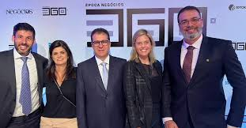

A NexaForge Academy foi fundada em 2018 com o objetivo de democratizar o acesso ao desenvolvimento de jogos digitais,
conectando teoria aplicada e prática profissional em um único ecossistema de ensino. Desde o início, a empresa focou em formar desenvolvedores preparados
para o mercado real, com cursos que abrangem desde fundamentos de programação
até design avançado e produção completa de jogos.
Atualmente, a NexaForge está presente em mais de 27 países, atendendo uma base global de alunos
e contando com instrutores que atuam diretamente na indústria de games.
Sua matriz está localizada em São Paulo, Brasil, um dos principais polos tecnológicos da
América Latina, o que permite à empresa acompanhar de perto as tendências e demandas do setor.
Com uma metodologia orientada a projetos e foco em resultados concretos, a NexaForge Academy se posiciona
como uma ponte entre aprendizado e carreira. Se o objetivo é sair do zero ou escalar para um nível profissional, a proposta é
simples: transformar interesse em habilidade e habilidade em oportunidade real dentro da indústria de jogos.

Os fundadores da NexaForge Academy, Lucas Andrade e Marina Torres, começaram de forma pouco estratégica, mas com alto nível de execução.
Em 2016, ambos atuavam como freelancers na área de desenvolvimento de jogos independentes, enfrentando um problema recorrente:
excesso de conteúdo teórico e escassez de formação prática orientada ao mercado. A virada aconteceu quando decidiram estruturar
um pequeno curso online focado em projetos reais — o primeiro produto gerou cerca de R$ 12 mil em receita nos três primeiros meses, validando demanda.
A partir disso, abandonaram gradualmente os trabalhos freelancers e passaram a operar com foco total na escalabilidade do ensino digital.
Lucas tinha um perfil técnico e analítico, com forte domínio em programação e engines como Unity e Unreal, enquanto Marina operava
na camada estratégica — marketing, posicionamento e experiência do aluno. Essa divisão não foi acidental, foi o principal fator de eficiência:
enquanto um aumentava a qualidade do produto, o outro aumentava distribuição e aquisição. Em menos de dois anos, estruturaram uma plataforma própria, ampliaram
o portfólio de cursos e estabeleceram parcerias com profissionais da indústria. O crescimento foi consistente: saíram de algumas dezenas de
alunos para milhares, expandindo inicialmente para a América Latina e depois para mercados internacionais.
Hoje, os dois são reconhecidos como referências no ensino aplicado ao desenvolvimento de jogos, não pela teoria que ensinam, mas pelos resultados
que os alunos conseguem gerar. A filosofia central da NexaForge reflete diretamente a trajetória dos fundadores: aprendizado sem aplicação não tem valor econômico.
Por isso, toda a estrutura da empresa foi construída com foco em conversão real — transformar iniciantes
em profissionais capazes de gerar renda dentro da indústria de games. entre em contato conosco